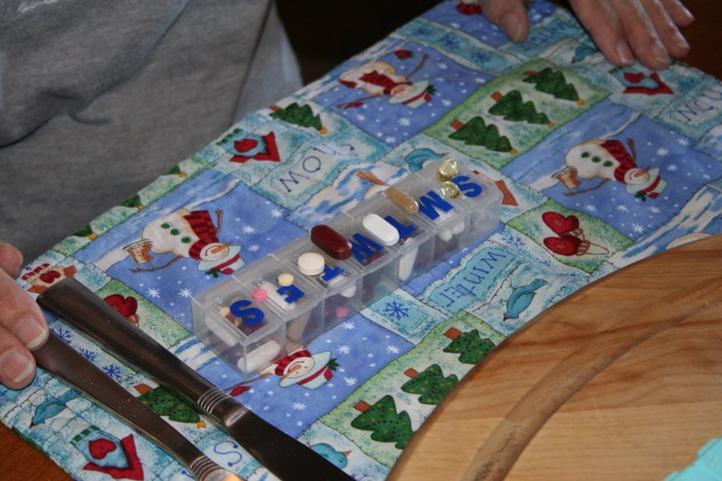

Vigor Boost Side Effects: Interactions, Cautions and Who Should Skip It
The doses are small, so most healthy men won't notice much. The real questions are which medications deserve a doctor's check first, and how to tell a clean label from the tainted products the FDA keeps finding.

Key takeaways
- Side effects are unlikely at these doses for most healthy men. The whole active blend is 82 mg, with 10 mg of caffeine.
- Check with a doctor if you take nitrates, ED drugs or blood pressure medicine. L-arginine and horny goat weed act on blood vessels.
- Ashwagandha has the most safety notes. It may affect thyroid hormones, and rare liver injury has been reported with ashwagandha supplements.
- The FDA has found hidden drugs in hundreds of "male enhancement" products. A complete label and a traceable distributor are your first line of defense.
- Erection problems deserve a doctor first. They can be an early sign of heart disease, diabetes or low testosterone.
Vigor Boost side effects are likely to be mild or absent for most healthy men, because each gummy holds just 82 mg of actives, including 10 mg of caffeine. The cautions are about interactions: nitrates, ED drugs and blood pressure medication (L-arginine, horny goat weed), thyroid or liver conditions (ashwagandha) and caffeine sensitivity.
This page goes ingredient by ingredient, flags the medications that matter, explains what to watch for in the first weeks and covers why the FDA's warnings about tainted sexual enhancement products make a printed label worth reading closely. For the overall verdict and price, see our Vigor Boost review. Nothing here replaces advice from your own doctor or pharmacist, who knows your medications.

Vigor Boost: check today's price
A once-daily men's vitality gummy with maca, muira puama, tribulus and horny goat weed. Sold only on the official site, with a 60-day money-back guarantee.
See the official price →What are the side effects of Vigor Boost?
Nobody has published a safety study on the finished gummy, so what follows is drawn from what's known about each ingredient, scaled to the amounts the label allows. That scaling matters. Most side effects reported for these herbs come from doses of hundreds or thousands of milligrams. The Vigor Boost blend is 82 mg in total.
| Ingredient | Possible effects (mostly at high doses) | Who should be careful |
|---|---|---|
| Caffeine (10 mg) | Jitters, faster heartbeat, poor sleep in sensitive people | Caffeine-sensitive, heart rhythm issues, anxiety |
| L-arginine (10 mg or less) | Lower blood pressure, stomach upset | Nitrates, ED drugs, blood pressure drugs, after a heart attack |
| Horny goat weed (10 mg or less) | Dizziness, dry mouth, fast heartbeat at large doses | Blood pressure drugs, bleeding disorders, heart conditions |
| Tribulus (10 mg or less) | Stomach upset; rare liver and kidney case reports | Liver or kidney disease, diabetes drugs |
| Ashwagandha (about 21 mg max) | Drowsiness, stomach upset; rare liver injury; thyroid changes | Thyroid disease, liver disease, sedatives, immune suppressants |
| Green tea extract (about 14 mg max) | Liver injury reported with concentrated extracts at high doses | Liver disease |
| Maca, muira puama, catuaba | Few reported effects | Limited safety data; caution with hormone-sensitive conditions |
| Sugar and sorbitol | 2 g added sugar; sorbitol can loosen stools in quantity | Diabetes, strict sugar limits |
The maximum amounts in that table come from the label's descending-order listing and its printed caffeine dose. Our Vigor Boost ingredients page shows how those ceilings are calculated. They're upper bounds, not the actual split, which the company doesn't disclose.
Does stacking with other supplements change the picture?
Yes, more than the gummy alone. A lot of men add a vitality product to a pre-workout, a testosterone formula or a stress capsule, and those often repeat the same ingredients at much larger doses. A pre-workout can carry 200 to 300 mg of caffeine. A standalone ashwagandha capsule usually has 300 to 600 mg. Read every label you take and add up the overlaps, because that total is what your liver and heart actually see.
HorseBoost, the related strawberry gummy, uses the same 82 mg blend with 5 mg of caffeine. Taking both at once just doubles the herbs and sugar for no clear gain, so pick one.

How much caffeine is in Vigor Boost, and is it enough to cause problems?
The label prints 10 mg. That's about what you'd get from a cup of decaf, and a tenth of a typical cup of brewed coffee. The FDA cites 400 mg a day as an amount not generally linked to harmful effects in healthy adults, so one gummy is a small slice of that.
Two qualifications. Green tea extract contains some caffeine of its own, and the label doesn't say whether the 10 mg includes it, so the real total could be a little higher. And caffeine stacks. If you already drink four coffees and an energy drink, or if your doctor has asked you to cut caffeine for palpitations, high blood pressure or anxiety, count the gummy too. Taking it in the morning avoids any effect on sleep.
Is L-arginine safe with blood pressure drugs, nitrates or ED pills?
L-arginine helps the body make nitric oxide, which widens blood vessels. On its own, at gram doses, it can lower blood pressure slightly. The concern is stacking that effect on top of drugs that do the same thing:
- Nitrates such as nitroglycerin or isosorbide, used for chest pain.
- PDE5 inhibitors such as sildenafil, tadalafil or vardenafil, used for erectile dysfunction.
- Blood pressure medications of any class.
Let's keep this in proportion. Vigor Boost contains 10 mg of arginine or less, while a normal diet supplies several grams a day. The risk from that amount is small. But horny goat weed also has PDE5-like activity in lab studies and may lower blood pressure, and the label itself tells anyone taking medication to consult a doctor first. If you take nitrates, the rule is simple: don't add any sexual health supplement without your cardiologist's approval.
There's one more specific warning. A 2006 trial of high-dose arginine after heart attack was stopped early because of more deaths in the arginine group. MedlinePlus and other references advise against arginine supplements after a recent heart attack. If that's you, skip this product unless your cardiologist says otherwise.
What are the cautions for tribulus and horny goat weed?
Tribulus terrestris
At usual supplement doses, tribulus mostly causes mild stomach upset when it causes anything. There are rare case reports of liver and kidney injury, generally with large amounts or long use. Some animal research suggests it can lower blood sugar, so men on diabetes drugs should mention it to their doctor. In Vigor Boost it's eighth on the blend list, at 10 mg or less.
Horny goat weed
Large doses of horny goat weed have been linked to dizziness, dry mouth, nosebleeds, rapid heartbeat and, rarely, breathing problems. It may also slow blood clotting and lower blood pressure in theory. Those reports involve amounts far beyond 10 mg, but if you take blood thinners, have a bleeding disorder, a heart rhythm problem or low blood pressure, it's a reason to ask first.
Is the ashwagandha in Vigor Boost a problem for thyroid or liver?
Ashwagandha is generally well tolerated in short-term studies, with drowsiness and stomach upset the most common complaints. The National Center for Complementary and Integrative Health highlights a few specific concerns:
- Thyroid. Ashwagandha may raise thyroid hormone levels. That matters if you have an overactive thyroid or take thyroid medication.
- Liver. Rare cases of liver injury have been reported in people taking ashwagandha supplements. Some countries have restricted it for that reason.
- Drug interactions. It may interact with sedatives, immune-suppressing drugs, and medications for diabetes, blood pressure and thyroid disease.
- Hormone-sensitive prostate cancer. Because it may affect testosterone, men with this condition are usually advised to avoid it.
Vigor Boost contains at most about 21 mg, a fraction of the 300 to 600 mg in most trials, so the risk is lower than with a standalone ashwagandha capsule. Lower isn't zero, though, and liver reactions don't always follow dose neatly. Watch for dark urine, yellowing of the skin or eyes, unusual fatigue or pain under the right ribs, and stop if they appear. Our ashwagandha guide has more on the herb itself.
Can the gummy itself cause side effects?
The non-active part is ordinary candy chemistry: corn syrup, cane sugar, water, apple pectin, sorbitol powder, natural flavors, citric acid and sodium citrate dihydrate. Each gummy has 10 calories and 2 g of added sugar, which is 4% of the daily value.
For most people that's trivial. If you have diabetes, count the 2 g of carbohydrate. Sorbitol is a sugar alcohol that can cause gas or loose stools in large amounts, but one gummy contains little. People with a corn allergy should note the corn syrup. The gummy is set with pectin rather than gelatin. And because it looks and tastes like candy, store it away from children, as the label says.
Why does a printed label matter? FDA warnings on tainted male enhancement products
This is the risk that tends to get missed. The FDA has found hundreds of supplements marketed for sexual enhancement that secretly contained prescription drugs, most often sildenafil or tadalafil, the active ingredients in Viagra and Cialis, sometimes at more than prescription strength. Some contained untested drug analogs. None of these drugs were listed on the labels.
Hidden PDE5 drugs are dangerous for exactly the men most likely to buy these products. Combined with nitrates, they can drop blood pressure to life-threatening levels. They also interact with some heart and blood pressure medications. The FDA keeps a public list of tainted products and warns that many are sold online and in gas stations, often under names that change frequently.
Nothing we've seen suggests Vigor Boost contains anything beyond its label, and we have no evidence of adulteration. A label alone can't prove a negative, and we haven't lab-tested it. What a clear label does give you is accountability. Vigor Boost lists every ingredient by name, prints a caffeine dose, names its distributor (Loja Experience Ltda in Largo, Florida) with a phone number and email, and states GMP manufacturing. Products the FDA flags often have none of that. Red flags worth knowing:
- Promises of effects "within minutes" or "lasting 72 hours."
- Claims to work like, or better than, prescription ED drugs.
- No distributor address, or only a foreign one with no contact details.
- Single-dose packets sold at checkout counters.
You can search the FDA's tainted products database by name before buying anything in this category. Buying from the official site rather than an unknown marketplace seller also reduces the chance of counterfeits.
Who should not take Vigor Boost?
Talk to a doctor first, or skip it, if any of these describe you:
- You take nitrates for chest pain, or have had a heart attack recently.
- You use ED medication, blood pressure drugs, blood thinners, sedatives, thyroid medication, diabetes medication or immune suppressants.
- You have liver disease, kidney disease, thyroid disease, a heart rhythm disorder or hormone-sensitive prostate cancer.
- You're sensitive to caffeine or have been told to avoid it.
- You have erection problems that are new or worsening and haven't seen a doctor about them.
That last point isn't about the gummy's safety. It's about what might go unnoticed. Erectile problems can appear years before heart disease is diagnosed, and they're also common with diabetes, high blood pressure, sleep apnea and low testosterone. A checkup can catch those early. Our article on low testosterone in men covers symptoms worth testing for, and our men's health section has more.
When should you stop and call a doctor?
Stop taking it and get medical advice if you notice chest pain, a racing or irregular heartbeat, fainting or severe dizziness, signs of liver trouble such as yellow skin or dark urine, or a rash or swelling that suggests an allergy. Chest pain or trouble breathing calls for emergency care, not a phone call. Milder issues such as an upset stomach or trouble sleeping usually settle if you take the gummy with food in the morning, and stopping is always an option. If you stop because of side effects within 60 days, orders through the official checkout are covered by the money-back guarantee.
For the first two weeks, a simple log helps. Note the time you took the gummy, your coffee intake, how you slept and anything unusual. If you also own a home blood pressure cuff and take blood pressure medication, a few morning readings before and after starting give your doctor something concrete to look at. Most men will see no change at all, which is reassuring in its own right.
Vigor Boost: check today's price
A once-daily men's vitality gummy with maca, muira puama, tribulus and horny goat weed. Sold only on the official site, with a 60-day money-back guarantee.
See the official price →Frequently asked questions
Can Vigor Boost raise blood pressure?
It's unlikely at these doses. Caffeine at 10 mg has little effect on blood pressure for most people. If you have uncontrolled high blood pressure, check with your doctor before adding any supplement, and monitor your readings.
Can I drink alcohol while taking Vigor Boost?
There's no known direct interaction at these doses. Alcohol itself is a common cause of poor sleep, low energy and erection problems, so cutting back may do more than the gummy.
Will Vigor Boost show up on a drug test?
None of the listed ingredients is a banned or controlled substance. Competitive athletes should know that supplements aren't tested by sports bodies unless certified, and Vigor Boost doesn't list a sport certification.
Can Vigor Boost cause headaches?
Headaches aren't commonly linked to these ingredients at low doses. Caffeine can trigger them in sensitive people, and so can stopping caffeine suddenly if you drink a lot of coffee. If headaches persist, stop and ask your doctor.
Is Vigor Boost safe for women?
It's marketed to men. Ashwagandha and several other herbs are not recommended during pregnancy or breastfeeding, and the label tells pregnant or nursing women to consult a doctor first.
Can I take two gummies for a stronger effect?
Stick to the label, which says one gummy once daily. There's no evidence that doubling up helps, and it doubles the caffeine and sugar.
Should I stop Vigor Boost before surgery?
Many doctors ask patients to stop herbal supplements about two weeks before surgery, partly because of effects on blood pressure, bleeding and anesthesia. Tell your surgical team you take it.
Cleared it with your doctor?
One gummy a day, a fully listed formula and a 60-day money-back guarantee. Check current Vigor Boost prices on the official page.
See Vigor Boost's official price →Related: Vigor Boost review: label, price and verdict · Vigor Boost ingredients explained · Ashwagandha for stress